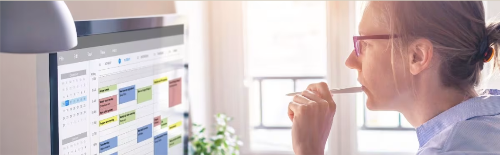

Tiden
Guide: Skab mere balance i din hverdag
Mange oplever, at deres hverdag føles travl og fyldt med opgaver. Når mange ting skal nås på kort tid, kan det være svært at finde pauser og tid til at slappe af. Når vi hele tiden føler os pressede på tid, kan det skabe stress og gøre det sværere at være til stede i det, vi laver. Minimalisme kan også handle om vores tid. Ved at prioritere det vigtigste og skabe små pauser i løbet af dagen kan vi skabe mere balance i vores hverdag. Her er nogle enkle trin, der kan hjælpe dig med at skabe mere ro i din tid.
Trin 1 – Prioritér de vigtigste opgaver
Når alt føles vigtigt, kan det være svært at finde overblik. Derfor kan det hjælpe at vælge nogle få opgaver, der er vigtigst.
To Do:
- Start dagen med at vælge 3 vigtige opgaver
- Skriv dem ned
- Fokusér først på disse opgaver
Trin 2 – Planlæg små pauser
Pauser er vigtige for at holde energi og koncentration i løbet af dagen. Mange arbejder i lange perioder uden pause, hvilket kan gøre det sværere at fokusere.
To Do:
- Planlæg korte pauser i løbet af dagen
- Rejs dig og bevæg dig lidt
- Tag en pause fra skærme
Trin 3 – Fokusér på én ting ad gangen
Når vi prøver at gøre mange ting på én gang, kan det føles mere stressende. Ved at fokusere på én opgave ad gangen kan arbejdet føles mere overskueligt.
To Do:
- Arbejd med én opgave ad gangen
- Undgå at skifte mellem mange opgaver
- Fjern distraktioner, mens du arbejder
Trin 4 – Gør plads til tid uden planer
Når hver time er planlagt, kan det være svært at finde ro. Ved at skabe små perioder uden planer kan du give dig selv mere fleksibilitet og ro.
To Do:
- Planlæg ikke hele din dag
- Giv plads til spontane pauser
- Brug tid på aktiviteter, der giver energi
Reflektér over din tid
Tag et øjeblik og tænk over, hvordan du bruger din tid.
- Hvornår på dagen føler du dig mest presset?
- Er der opgaver, der fylder mere end nødvendigt?
- Har du tid i din hverdag til pauser og ro?
Ved at blive mere bevidst om din tid kan du lettere finde små steder, hvor du kan skabe mere balance.
Prøv at vælge én lille ændring fra guiden og se, hvordan det påvirker din hverdag.